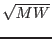

| Parameter | Mand | Type | Default | Constraints |
| infile | yes | Dataset | ``'' | |
Name of the FITS file containing
the EPIC source time series. Case sensitive.
|
| nbins | no | Integer | 1 | Constraint : must be a power of 2,
Nbins  NBINLC NBINLC |
Number of bins per interval. An
interval is a segment of the light curve for which a PDS is
calculated. Each PDS is averaged at the end of the run. The
number of frequency bins of the output PDS plot is Nbins/2.
In case Nbins=1 (the default value), Nbins is set to
the maximum legal value (full resolution spectrum).
|
| bkgsub | no | Boolean | no | |
If the background should be subtracted (no => total counts used or yes => net counts used) to create the power density spectrum
|
| nerrorpoints | no | Integer | 5 | Constraint :  5 5 |
This
parameter defines the way in which the error bars on the plotted PDS
are calculated. If the number of PDS averaged is higher than the
nerrorpoints value (default=5), the error bars are evaluated
by using the standard deviation of the average (based on the
measured scatter). Otherwise the error bars are evaluated by
propagating the theoretical error bars through an averaging process.
The theoretical error bars are obtained from the relevant chi-square
distribution. For example, with normalization = 1, the theoretical
error value is 2 (Leahy normalization) for (white) noise.
The theoretical error bar on the averaged and rebinned final
spectrum is the theoretical error bar on a single interval divided
by , where M is the number of intervals averaged and W is
the number of frequency bins combined.
|
| normalization | no | Integer | 1 | Constraint : 0, 1 or 2 |
Flag to specify the type of normalization to apply to the PDS.
|
| fillgaps | no | Boolean | no | |
If the gaps have to be filled, value
must be yes.
|
| npoints | no | Integer | 2 | Constraint : 1, 2, 3 or 4 |
Replace the gaps
in the input series with the running mean (available only if
fillgaps is ``yes''). If gapfill = n, data gaps in
the input series are filled with the running mean values calculated
over n bins.
|
| removetrend | no | Boolean | no | |
Indicate if a polynomial trend
has to be removed from the time series.
|
| polyorder | no | Integer | 1 | Constraint : 1, 2, 3 or 4 |
A
polynomial trend, up to 4th-order, can be removed from input time
series. Setting the parameter polyorder equal to 1, 2, 3 or
4 removes a 1st, 2nd, 3rd or 4th-order polynomial trend,
respectively (available only if removetrend is ``yes'').
|
| operation | no | Integer | 1 | Constraint : 2 |
Specify how
the removal trend is applied to the data (available only if
removetrend is ``yes''). The trend can be subtracted from the time
series (operation = 1), or the time series can be divided by the
trend (operation = 2), or the time series can be replaced with the
trend (operation = 3). By default the trend is subtracted (value set
to 1).
|
| rebin | no | Boolean | no | |
Indicate if the final PDS has to be
rebinned or not.
|
| rebintype | no | String | 1 | |
The final PDS can be rebinned either
with a constant rebinning factor or as a geometric series (to
produce nearly equispaced bins in a logX representation). Values
greater than 1 indicate a constant rebinning factor. Geometric
series rebinning is obtained by entering a value less than -1, whose
modulus represents the step of the geometric series. The range of
allowed values for a negative rebinning parameter is limited (-1
rebintype  -3). -3).
|
| plotdevice | no | String | ``/PS'' | Constraint : valid device type |
Name of a valid output device. Not case sensitive.
|
| outfile | no | String | ``default.ps'' | less than 1024 char |
Name
of the output file containing the plot. Case sensitive.
|
| xscale | no | String | ``lin'' | Constraint : ``log'' or ``lin'' |
Use a logarithmic or a linear scale on the X-axis.
|
| yscale | no | String | ``lin'' | Constraint : ``log'' or ``lin'' |
Use a logarithmic or a linear scale on Y-axis. Where
yscale=``log'' negative values are omitted.
|
| gtis | no | Boolean | no | |
Indicate whether to provide a GTI file.
|
| gtiset | no | dataset | No default | |
Name of the FITS file
containing the GTIs. Case sensitive.
|
| Parameter | Mand | Type | Default | Constraints |